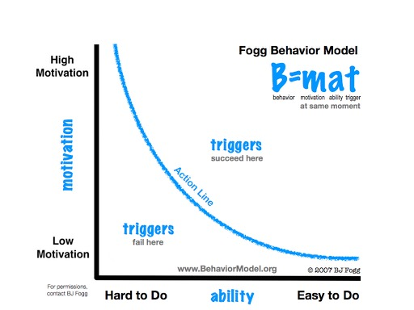
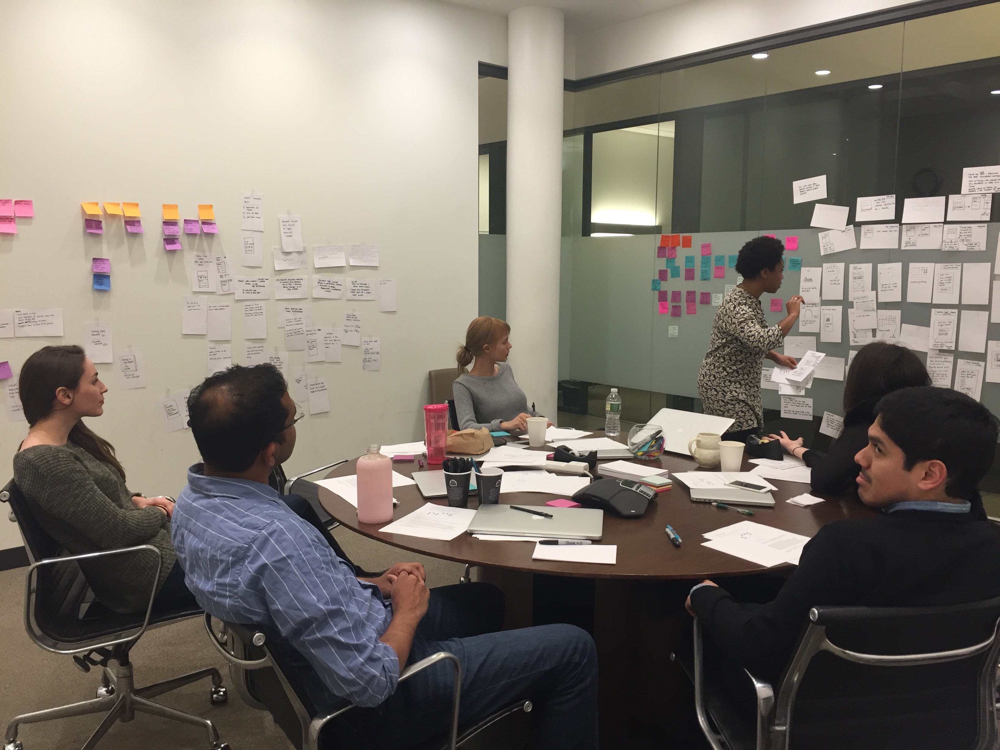
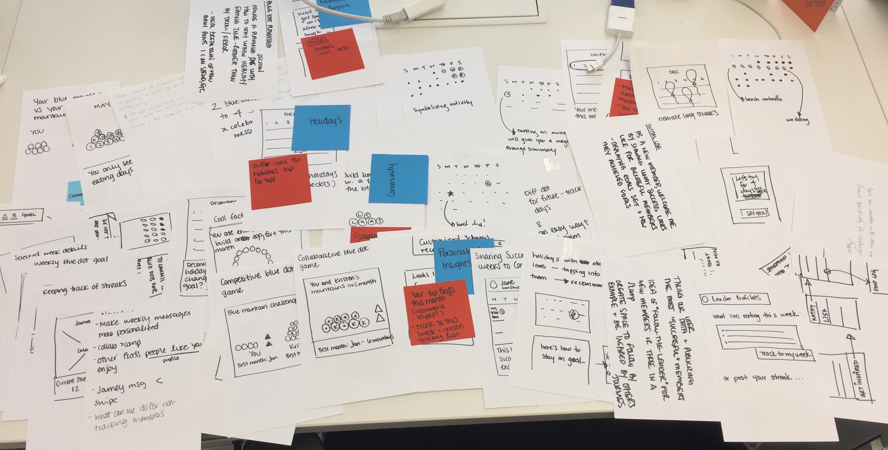
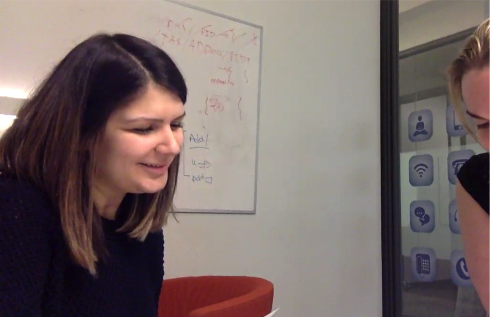
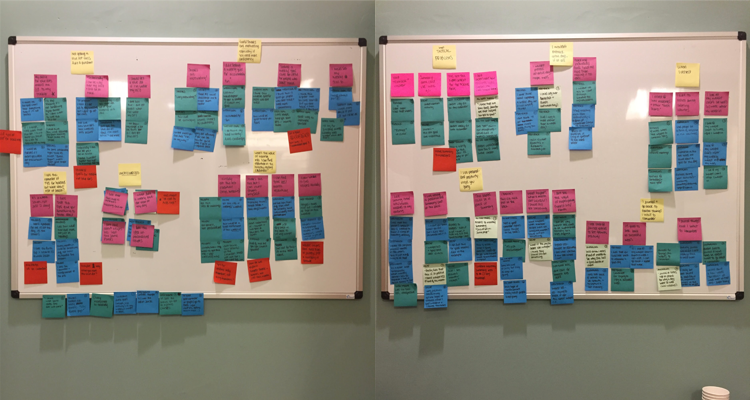

My Role
- Product Design
Who
The talented people on this product team
Timeline
- January 2016 - March 2017
Journey motivates members by acknowledging their incremental successes, on and off the scale
We think a lot about behavior change at Weight Watchers. BJ Fogg’s behavior model says that for a behavior to occur, a person has to be sufficiently motivated and able to perform the behavior while a trigger is present.

The products and services our team works on attempt to increase members' motivation to lose weight and ability to perform behaviors that lead to weight loss. Journey focuses specifically on motivating members by acknowledging the positive behaviors they do.
Sidenote: I got pretty damn excited when I found out BJ Fogg is a Weight Watchers lifetime member.
Design
Here are some ways we motivate our members:
Progress charts
- Members constantly tell us that seeing their weight decrease on the weight chart is extremely motivating in and of itself.
- We designed a healthy eating calendar that fills in with blue dots as members track within a healthy range.
Badges
Badges and encouraging messages when members hit weight, healthy eating, and activity milestones. For example, losing 5 pounds, tracking for 2 weeks in a row, and logging your first activity.
Weekly reflection messages
Messages we send a member after she tracks her weight. These are meant to be encouraging, kind of like a thumbs up for persisting.
I love talking about process...
Note: I love talking about process. Unfortunately, I can’t go into detail about all of the research and design decisions that went into these designs here but would love to chat more about our design process in person.
Here are a few key pieces of our process:
Brainstorming with a diverse set of backgrounds in the room.


Concept testing with members. 
Synthesizing findings and iterating on our ideas. 